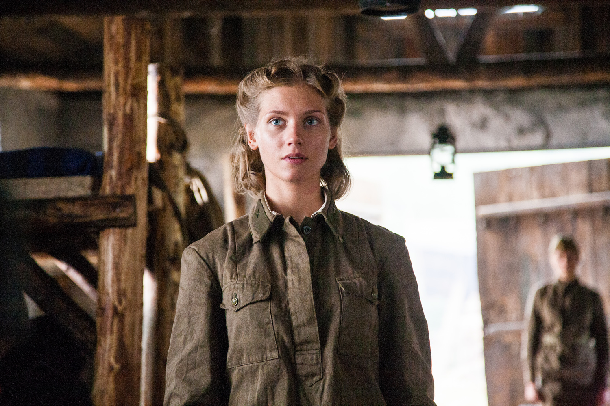

« А зори здесь тихие... »
ИМЯ: Галина Четвертак
ПРОИСХОЖДЕНИЕ: Воспитанница детского дома (подкидыш)
СПЕЦИАЛИЗАЦИЯ: Боец отделения, зенитчица
ОСОБЫЕ ПРИМЕТЫ: Малый рост, склонность к фантазированию, отличный голос.
Галя Четвертак — самый юный и беззащитный персонаж повести Бориса Васильева. Её образ служит напоминанием о том, что война не выбирает жертв и безжалостно ломает тех, кто создан для любви, сказок и творчества. Она была «замухрышкой», самой маленькой в группе, но её внутренний мир был больше, чем у любого другого бойца.

Кадр из фильма «А зори здесь тихие...», 2015 г. В роли Гали Четвертак — Кристина Асмус.
Для Гали, как для подкидыша, фантазии были единственным способом обрести почву под ногами. В детском доме она была «ничьей», и выдуманные истории о маме-медике помогали ей чувствовать себя защищенной. Это была её личная броня, которая, к сожалению, оказалась бесполезной против пуль.
Для Гали фантазии были не просто развлечением, а способом выживания. Будучи подкидышем и воспитанницей детского дома, она не имела опоры в прошлом. Именно поэтому она выстроила вокруг себя «хрустальный замок» из грёз.
| Мир фантазий | Суровая реальность |
|---|---|
| Мама — медицинский работник | Одиночество, статус подкидыша |
| Романтическая «большая любовь» | Страх, холод и война |
| Героическая смерть в воображении | Нелепая и трагическая гибель от ужаса |
В отряде Васкова её любили как ребенка, опекали, но именно эта неготовность к жизни без фантазий и стала её слабым местом. Война требовала хладнокровия, которого у мечтательницы Гали просто не могло быть.
Учителя литературы часто обращают внимание на детали, подчеркивающие глубину трагедии:
Война для Гали оказалась слишком страшной.
В отличие от её подруг — Риты Осяниной, мстившей за мужа, или Жени Комельковой, видевшей гибель семьи, — Галя встретилась со смертью лицом к лицу впервые именно в карельских лесах. Её охватил животный, неконтролируемый ужас, который невозможно было заглушить никакими выдумками.
Её гибель в произведении описывается как нечто трагичное и нелепое. Она не пошла в атаку с криком «За Родину!». Она выскочила из укрытия под пули врага просто потому, что не выдержала психологического напряжения. Это был не осознанный подвиг, а крик измученной детской души, которая хотела, чтобы этот кошмар просто прекратился.
Васильев через эту смерть показывает «изнанку» войны: здесь гибнут не только герои, но и дети, которые просто не успели повзрослеть.
Смерть Гали Четвертак — это протест автора против войны. Она погибает не как герой из её любимых романов, а как испуганный ребенок. Васильев показывает, что война — это не только подвиги, но и бессмысленная гибель тех, кто был рожден для сказок и песен, а не для убийства.
Момент смерти Гали
(Музыкальное сопровождение для погружения в тему)
Информацию брали здесь: